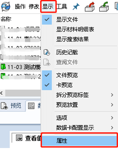

PDM基础使用流程
PDM基础使用流程
graph LR 创建产品-->数据录入-->数据审核-->数据发布-->产品变更-->数据査询
创建产品
根据项目启动流程，基于PDM【模板】按照规范创建存储目录文件夹，
并划分了对应的流程权限。
数据录入
各专业人员按规范进行数据录入，按照划分的目录进行数据存放
维护数据属性，主要是SW及文档数据卡属性
确认后的数据提交审核
数据审核
符合规范的数据，提交发布
不符合规范的数据，返回到设计状态
数据发布
发布的数据会进行版本修订修改发布的数据，需要进行数据变更
产品变更
对变更内容进行评审将变更的图纸或文档再次提交流程并评论变更内容，再次发布后系统自动生成修订版。
数据査询
在Windows资源管理器右上角找到搜索工具，单击下拉选择完全搜索
查询结果可以导出